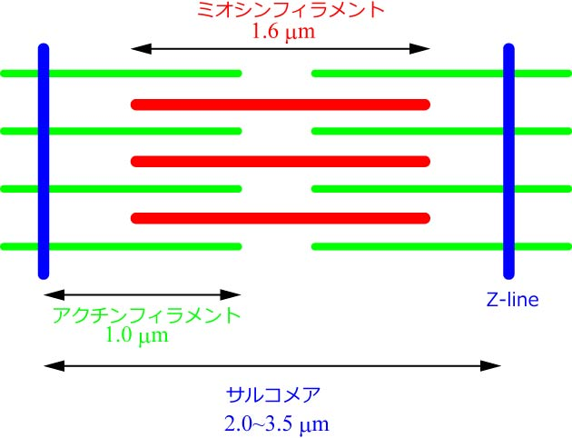
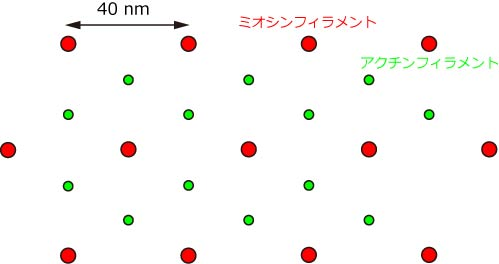

さて，もう少し詳しくサルコメアの構造を見ていきましょう．

これは，ウサギ骨格筋の場合の長さです．
非常にきれいに長さがそろっているのがわかります．
もちろん，サルコメア長は変化しますが．．．
種によっていろいろな長さのものがあります．
たとえば，カニの腕の筋肉などでは，サルコメア長が１０ミクロン以上に及ぶものもあります．
断面はどうなっているのでしょう？

これも非常にきれいな構造ですね．
ミオシンフィラメントが正三角形を取り，その中央にアクチンフィラメントが存在します．
ミオシンフィラメントの一辺は約40nmです．
これも，種によって構造が違います．
これは，ウサギ骨格筋の構造です．